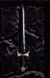

| Original Name | Nom Français |
| Mithril Bastard Sword +2 | Epée bâtarde de Mithril +2 |
|
 |
|
| Lieu |
| Stoneheim Une Ombre |
| Bonus |
| - |
| Commentaires |
| 4 Commentaires |
Mat de Lock
 Messages: 96 |
-Ptite erreur de skin Alors j'ai actuellement cette arme en version +1 et elle n'a pas ce skin. Elle a un skin unique dans l'inventaire, plutôt sympa et skin d'épée de fureur sur soi.
Niveau puissance elle est capable du meilleur comme du pire... tuer un centaure tracker en 2 coups comme venir à bout d'un skraug vert de base en 5 coups.
Posté le : 29-12-2003 10:30:42 |
|
obi
Messages: 24 |
pas d'erreur non non je comfirme qu elle a bien se skin (ou peut etre la +0 en totu cas je sais qu'une des 2 a se skin)
Posté le : 25-02-2004 14:54:18 |
|
Requiem Axe
Messages: 0 |
moi aussi c pas ce skin mon porteur la (la runique)et elle a un skin de sabres des faucheur et dans l'inventaire d'une epee bizarre
Posté le : 07-06-2004 21:36:07 |
|
Sulli
Messages: 64 |
Skin En +0 elle a un skin d'épée dla nuit En +1 +2 (+3 sur chaos) elle a un skin de fufu.
Posté le : 19-06-2004 16:26:13 |